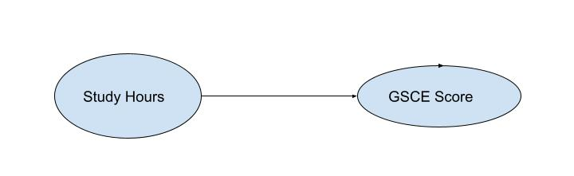

What is churn model?
If you check on google about the churn model, mostly you will find that building a churn model is to forecast which client will leave or not. There was a Kaggle challenge project about the churn model. Client churn was to be forecasted based on historical data.
Make a future teller cristle seems fabulus!
Then, we can ask a further question: How how needs this churn model come? Is it from the imagination of a talented professor who wants to do some academic research in AI and machine learning? Or is it from some company’s marketing or operation department?
We can image a story. Suppose there are two hosptials. In hospital one, all doctors are geniuses. They can accurately predict when the patient will heal or die according to the patient’s symptoms and historical data. In hospital two, the doctors can do further work.They can not only predict the development of the patient’s condition (when it will heal or die) based on the patient’s symptoms and historical data, but also analyze the causal relationship of various factors and formulate intervention and treatment plans according to the patient’s symptoms and historical data, so as to change the development of the patient’s condition, shorten the patient’s course of disease and reduce the patient’s pain, Save the patient’s life!
Obviously, we need doctors in the second hospital, although the doctors in the first hospital do forecast perfectly.
Now we come back to our churn model problem. Who or which department proposed the customer churn model? Why do they need the model? Dealing with customers and caring about whether customers are lost should be the market or operation department of a company.
They care about whether customers lose, but they are more concerned about what they need to do if a customer wants to lose, so as to retain the customer and maximize their business profits at the same time.
Doctors who can only predict the development of the patient’s course of disease, but can not intervene in the development of the patient’s course of disease, are of little use. What the patient needs is the doctor’s effective intervention in the course of the disease. Similarly, when a company’s market or operation department puts forward a customer churn model, they are concerned about the prediction of customer churn. However, they are more concerned that when a customer wants to lose, they need to intervene, so as to retain the customer with the minimum cost and maximum profit.
So, specifically, the customer churn model should be a customer churn and intervention system, as shown in Figure 1:

height: 450px
name: churn-intervene
Overall block diagram of churn forecast and consult service
Churn model project with Commercially valuable should include:
- Predict the loss of customers
- Intervene in customers who may be retained
This should be an iterative process in which artificial intelligence and business consulting are closely combined. Firstly, collect relevant data, establish a basic data set, predict the churning of coustomer based on this data set, and then put forward intervention suggestions to marketing/operation department. After the intervention, continue to collect data for the next round of prediction and intervention.
Once we take intervention into account and build a customer churn model with business value, things will become more complicated. In the forecasting stage, the output will no longer be two categories(churning/no-churning), but four categories as shown below Figure 2:
 name: 4-classes
name: 4-classes
Classify customers into 4 groups
- Do-Not-Disturbs(Sleeping Dog): This kind of coustomers will retain if we do nothing, otherwise, they will churn
- Definite leave: no matter what will happen, they will defininitly leave.
- Definitely Stay(Sure things): no matter what will happen, they will defininitly definitely stay.
- Persuadable: They will churn if we don’t take some action to intervenwe them.
For the first class of customers, it is optimal that we don’t do anything. For the second and third classes of customers, any intervention and persuasion will be worthless. Only the fourth category of customers, we need to intervene.
So, the churn model should be a system that includes two parts: forecast and intervene. The forecast part identify who needs intervension and the intervention part determines the best intervention decision
The Challenges of Churm Model
1. Forecast and Causation
The four classification prediction in churn model is a trivial problem in machine learning. We have many mature machine learning algorithms for that. The real challenge is that for customers who can be persuaded, how we make an intervention. For understand the challenge, we need to understand the basic idea of forecast in machine learning, and what it means when we say intervention. How to use reasoning language to describe the doctor’s intervention in the patient’s course of disease.
Prediction in machine learning is to predict another feature or event according to a certain feature or feature set. For example, predict someone’s income based on their educational background, age, etc. Expressed in mathematical language, it is to establish the mapping between the feature data set and the predicted set. It means that we want to find a mathematical function between the two datasets. We can express if as
\[
y = f(x)
\]
The mapping \(f\) from \(x\) to \(y\) can be either correlation or causality. For example, we can use the cock crows to predict the rise of the sun, but We cannot control the rise of the sun by interfering with the crowing of the rooster. Why? Because between the cock crowing and the run rising is correlation, not causation. In the same way, we can predict a student’s test score by his level ofeffort. If we interfere with a student’s level of effort, we can really control his exam results. There is a causal relationship between a student’s effort and his examination results.
Let’s come back to our churn model problem. We hope to retain customers through intervention. So, we hope to find the reason which make customer stay. The forecast in machine learning doesn’t identify the causal relation, so, we should find other methods of identifying the causalities of retaining a customers.
The first Challenge: Identify the causation of retaining customer.
2. Observation and experimentation
From the process of data generation, it can be divided into observation data and experimental data.
Experimental data refers to the data we can obtain by controlling the experimental process and repeating experiments. For example, nearly all physical and chemical experiments data. Causal reasoning is usually easier for it. We can control one variable and observe the change of another variable to infer whether there is a causal effect between them, and this kind of experiment can be observed and measured repeatedly. For example, we can control the cock’s crowing and observe whether the sun rises. From that, we infer whether there is a causality between the cock crowing and the sun rising. In the object motion experiment, we can control the force applied to the object and observe the change in its acceleration to infer the causal relationship between force and acceleration.
Observation data means that a researcher does not (or can’t) get involved in the data generation process, but only researches the passively recorded data. For example, if we want to study the world war, we can’t launch another world war and study it with repeated experiments. For the study of an epidemic, it is impossible to repeat the experiment. It is also very expensive or impossible to repeat if we want to know the reason for a marketing promotion’s success or failure. We can only obtain data through observation, not through intervention and experiment.
The causal reasoning of observed data will become very difficult, and sometimes there is a lot of pseudo-knowledge in it. For example, what caused the war. What caused the economic recession and recovery? And so on. Similarly, in the customer churn model, what causes the customer churn is also a very challenging problem. The challenge of causal inference from observed data is that we can’t repeat the experiment, and at the same time, the data does not have the mechanism of how it is generated. In data science, it is usually said that “all is in data,” which is not true for observed data.
The second Challenge: How to identify causal from observation data?
3. Intervention and Counterfactual
Intervention is the action that changes the course of developing. For example, doctors change the development of a patient’s illness through treatment. The marketing department retains customers through customer intervention.
However, our prediction of intervention results is very different from that in machine learning. Usually, the prediction in machine learning is conditional probability, that is, the probability of the prosperity of known condition A and the occurrence of event B, that is $ P(B|A) $. The conditional probability meand that if we already know that event a happened, how certain are we about whether time B happened.
Intervention and conditional probabilities are completely different. Intervention means that if we do event A, what will happen to event B? For example, if a person is 50 years old and never smokes, it is predicted that he can live to 95 years old. This is a prediction problem based on conditional probability in machine learning. If he smokes 10 cigarettes a day from the age of 50, how old can he live? This is a problem of intervention in causal reasoning. The customer intervension is the same problem as these.
How to make decision of intervension? Like always, we knowledge is from out past experiences. For example, my friend Tom has been renting for 10 years. All his friends have bought house and making money. Tom regretted it. He thought that if he bought a house like his friends, he could make a fortune.Tom’s regret is based on what didn’t happen. What has not happened in the past is called counterfactual.In the intervension of churn model, what action we should take should based the counterfactual inference. This is completely the inferencing of forecast in machine learning, that is forecasting based on the facts that already happened. But the counterfactural inference is based the event that doesn’t happened.
The thrid Challenge: Counterfactural inferencing based the event that doesn’t exist.
solutions to the the Challenges
Whether regression or classification, machine learning attempts to find the functional mapping relationship between input and output. Function mapping is essentially a kind of correlation, not causality. The aim of building churn model in business is to intervene and retain customers. Therefore, it is important to study causality and predict the consequences of intervention.
Causality and intervention is an ancient problem in long history. Countless sages spent their lives trying to find some causalities. Newton discovered the causal relationship between force and acceleration. Galileo proved that the falling speed of an object has nothing to do with the mass of it through the Leaning Tower experiment of Pisa. Unfortunately, until recently, the mathematical representation of causal reasoning and intervention was put forward, and from that the the set of strict mathematical theories and methods was developed.
To start our journy of real world churn model, We need to clarify some basic concepts and how to represent causality.
Some Basic concept: Causal Graph and SCM(Structure Causal Model)
Smoking leads to the deposition tar in the lung, which in turn leads to lung cancer
The events, for example, smoking, Tar and lung cancer are called node. The directed edge from node
\(A\) to
\(B\) reprsent the
\(A\) is the causal of
\(B\). As the in above figure, smoking is the causal of the tar in lung. But, one may ask, tar in the must lead to lung cancer? Maybe not always! Churchill smoked heavely, but he lived to be 91 and did not die of lung cancer. There is only a probability relationship between smoking and lung cancer. That is the cause only make the result happened with some probability. We call it conditional probability
\(P(B|A)\). So, we can use the probability language to represent causality relationship between causal and effect. This kind of graph is called probabilistic graphical model, is also called causal in causal graph when we want to stress the causal-effect relationship in causal inference.

Did smoking cause Churchill had lung cancer?
Tom and Jerry are two middle school students. They are going to take the GCSE exam. Tom works very hard. He studies eight hours a day, while Jerry plays computer games mainly. He studies in only one hour per-day. We can imagine that Tom’s test scores should be better than Jerry’s. There should be a functional relationship between GCSE scores and study hours in a statistical sense.
\[ GCSE \, Score = f(study \, hours) \]
Like the causal graph, we can also use simalar graph to represent the causal-effect relationship, that is called SCM(Structure Causal Model)

The SCM of study hours and GCSE score
Special Attention: Conditional Probability and Convention
We need to understand two particularly confusing concepts: conditional probability and causality
Suppose there are two events, \(A\) and \(B\). We already observed that event \(A\) has happened. How do we estimate the certainty of an event \(B\) will happen? In other words, how much information can we get in estimating the \(B\) on the condition that we already know the event \(A\)?. Mathematically, it is represented as \(P(B|A)\). For example, if the doctor measured the temperature of the patient, which is \(39^c\), what is the probability that he is infected by Covid-19? The doctor wanted to know \(P( infected by Covid19=Ture|temperature=39^c)\). In our churn model problem, if we know the customer has lost his job, what is the probability he will churn? What do we want to know is \(P( customer will churn=Ture|lost job=Ture)\)
Conditional probability shows that researcher is only the observer and recorder of a natural system, not the intervener. All machine learning algorithms are dealing with conditional probability probelem.
In causality, it is another story.
Suppose we make the event \(A\). How about the probability of event \(B\) happening? In the scenario, the researcher is not only an observer; he is also a participant. He is also one part of the system to be researched. For example, a patent is very ill. He would die without seeing a doctor. But the patent decided to see a doctor. Judea Pearl Pearl (2016 - 2016) invented do-calculus to represent the causal inference after intervention \(P(A|do(B))\). In the churn model, the marketing department found the customer would leave. He will do something to keep him. Representation of this case as \(P( retain the customer|do(intervention))\)
Inverse weight
Backdoor Criterion
Structure Causal Model(SCM)
Including Plots
You can also embed plots. See Figure 1 for example:
par(mar = c(0, 1, 0, 1))
pie(
c(280, 60, 20),
c('Sky', 'Sunny side of pyramid', 'Shady side of pyramid'),
col = c('#0292D8', '#F7EA39', '#C4B632'),
init.angle = -50, border = NA
)
“How Deep Is Europe’s Dependence on Russian Oil?” n.d.
Pearl, Judea. 2016 - 2016. Causal Inference in Statistics : A Primer. Chichester, West Sussex: Wiley.